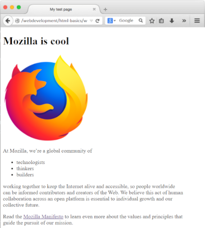
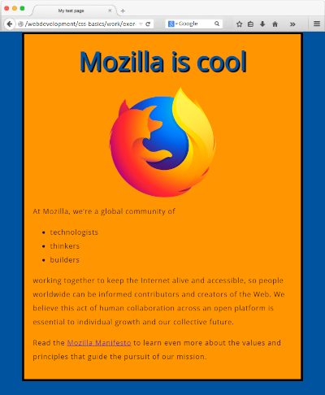

Getting started with the Web is a concise series introducing you to the practicalities of web development. You'll set up the tools you need to construct a simple webpage and publish your own simple code.
The story of your first website
It's a lot of work to create a professional website, so if you're new to web development, we encourage you to start small. You won't build another Facebook right away, but it's not hard to make your own simple website online, so we'll start there..
By working through the articles listed below, you will go from nothing to getting your first webpage online. Let's begin our journey!
When it comes to tools for building a website, there's a lot to pick from. If you're just starting, you might be confused by the array of code editors, frameworks, and testing tools out there. In Installing basic software, we will show you step-by-step how to install the software you need to begin some basic web development.
Before you start writing the code for your website, you should plan it first. What information are you showcasing? What fonts and colors are you using? What will your website look like? We outline a simple method you can follow to plan out your site's content and design.
A website consists of many files: text content, code, stylesheets, media content, and so on. When you're building a website, you need to assemble these files into a sensible structure and make sure they can talk to one another.
Dealing with files explains how to set up a sensible file structure for your website and what issues you should be aware of.
What structure should your website have?
Next, let's look at what structure our test site should have. The most common things we'll have on any website project we create are an index HTML file and folders to contain images, style files, and script files.
- index.html: This file will generally contain your homepage content, that is, the text and images that people see when they first go to your site. Using your text editor, create a new file called index.html and save it just inside your test-site folder.
- images folder: This folder will contain all the images that you use on your site. Create a folder called images, inside your test-site folder.
- styles folder: This folder will contain the CSS code used to style your content (for example, setting text and background colors). Create a folder called styles, inside your test-site folder.
- scripts folder: This folder will contain all the JavaScript code used to add interactive functionality to your site (e.g. buttons that load data when clicked). Create a folder called scripts, inside your test-site folder.
Hypertext Markup Language (HTML) is the code that you use to structure your web content and give it meaning and purpose. For example, is my content a set of paragraphs or a list of bullet points? Do I have images inserted on my page? Do I have a data table? Without overwhelming you, HTML basics provide enough information to make you familiar with HTML.
<!DOCTYPE html>
<html>
<head>
<meta charset="utf-8">
<title>My test page</title>
</head>
<body>
<h1>Mozilla is cool</h1>
<img src="images/firefox-icon.png" alt="The Firefox logo: a flaming fox surrounding the Earth.">
<p>At Mozilla, we’re a global community of</p>
<ul>
<li>technologists</li>
<li>thinkers</li>
<li>builders</li>
</ul>
<p>
Working together to keep the Internet alive and accessible, so people worldwide can be informed contributors and creators of the Web. We believe this act of human collaboration across an open platform is essential to individual growth and our collective future.
</p>
<p>
Read the <a href="https://www.mozilla.org/en-US/about/manifesto/">Mozilla Manifesto</a> to learn even more about the values and principles that guide the pursuit of our mission.
</p>
</body>
</html>
Consult the HTML basics to understand each part of the code presented above.
Conclusion:
If you have followed all the instructions in this article, you should end up with a page that looks like the one below (you can also view it here):
Cascading Stylesheets (CSS) is the code that you use to style your website. For example, do you want the text to be black or red? Where should content be drawn on the screen? What background images and colors should be used to decorate your website? CSS basics take you through what you need to get started.
Before starting the style.css file, open your index.html file. Paste the following line in the header (between the head> and </head> tags):
<link href="styles/style.css" rel="stylesheet" type="text/css">
<!DOCTYPE html>
<html>
<head>
<meta charset="utf-8">
<title>My test page</title>
<link href="styles/style.css"
rel="stylesheet"
type=
"text/css">
</head>
.
.
.
Now let's improve the appearance of the example by adding more rules and information to the style.css file.
html {
font-size: 10px;
font-family: 'Open Sans',sans-serif;
background-color: #00539F;
}
h1 {
font-size: 60px;
text-align: center;
margin: 0;
padding: 20px 0;
color: #00539F;
text-shadow: 3px 3px 1px #000;
}
p, li {
font-size: 16px;
line-height: 2;
letter-spacing: 1px;
}
body {
width: 600px;
margin: 0 auto;
padding: 0 20px 20px 20px;
border: 5px solid #000;
background-color: #FF9500;
}
img {
display: block;
margin: 0 auto;
}
Consult the CSS basics to understand each part of the code presented above.
Conclusion:
If you followed all the instructions in this article, you should have a page that looks similar to this one below (you can also view it here):
JavaScript is the programming language that you use to add interactive features to your website. Some examples could be games, things that happen when buttons are pressed or data is entered in forms, dynamic styling effects, animation, and much more. JavaScript basics give you an idea of what is possible with this exciting language, and how to get started.
In your index.html file, enter this code on a new line, just before the closing </body> tag:
<script src="scripts/main.js"></script>
.
.
.
<p>
Working together to keep the Internet alive and accessible, so people worldwide can be informed contributors and creators of the Web. We believe this act of human collaboration across an open platform is essential to individual growth and our collective future.
</p>
<p>
Read the <a href="https://www.mozilla.org/en-US/about/manifesto/">Mozilla Manifesto</a> to learn even more about the values and principles that guide the pursuit of our mission.
</p>
<script src="scripts/main.js"></script>
</body>
</html>
Now, let's add some new features to our example site to the main.js file.
- Adding an image changer In this section, you will learn how to use JavaScript and DOM API features to alternate the display of one of two images. This change will happen as a user clicks the displayed image.
- Choose an image you want to feature on your example site. Ideally, the image will be the same size as the image you added previously, or as close as possible.
- Save this image in your images folder.
- Rename the image firefox2.png.
- Add the JavaScript below to your main.js file.
- Save all files and load index.html in the browser. Now when you click the image, it should change to the other one.
- Adding a personalized welcome message Let's also change the page title to a personalized welcome message when the user first visits the site. This welcome message will persist. Should the user leave the site and return later, we will save the message using the Web Storage API. We will also include an option to change the user, and therefore, the welcome message.
First of all, in index.html, add the following line just before the <script> element:
<button>Change user</button>
.
.
.
<p>
Read the <a href="https://www.mozilla.org/en-US/about/manifesto/">Mozilla Manifesto</a> to learn even more about the values and principles that guide the pursuit of our mission.
</p>
<button>Change user</button>
<script src="scripts/main.js"></script>
</body>
</html>
Once you have finished writing the code and organizing the files that make up your website, you need to put it all online so people can find it. Publishing your sample code describes how to get your simple sample code online with minimum effort.
When you access your favorite website, a lot of complicated things happen in the background that you may not know about. How the web works outlines what happens when you view a webpage on your computer.
example
- Web Demystified: A great series of videos explaining web fundamentals, aimed at complete beginners to web development. Created by Jérémie Patonnier.
- The web and web standards: This article provides some useful background on the Web — how it came about, what web standard technologies are, how they work together, why "web developer" is a great career to choose, and what kinds of best practices you'll learn about through the course.
All the documentation in this page is taken from MDN